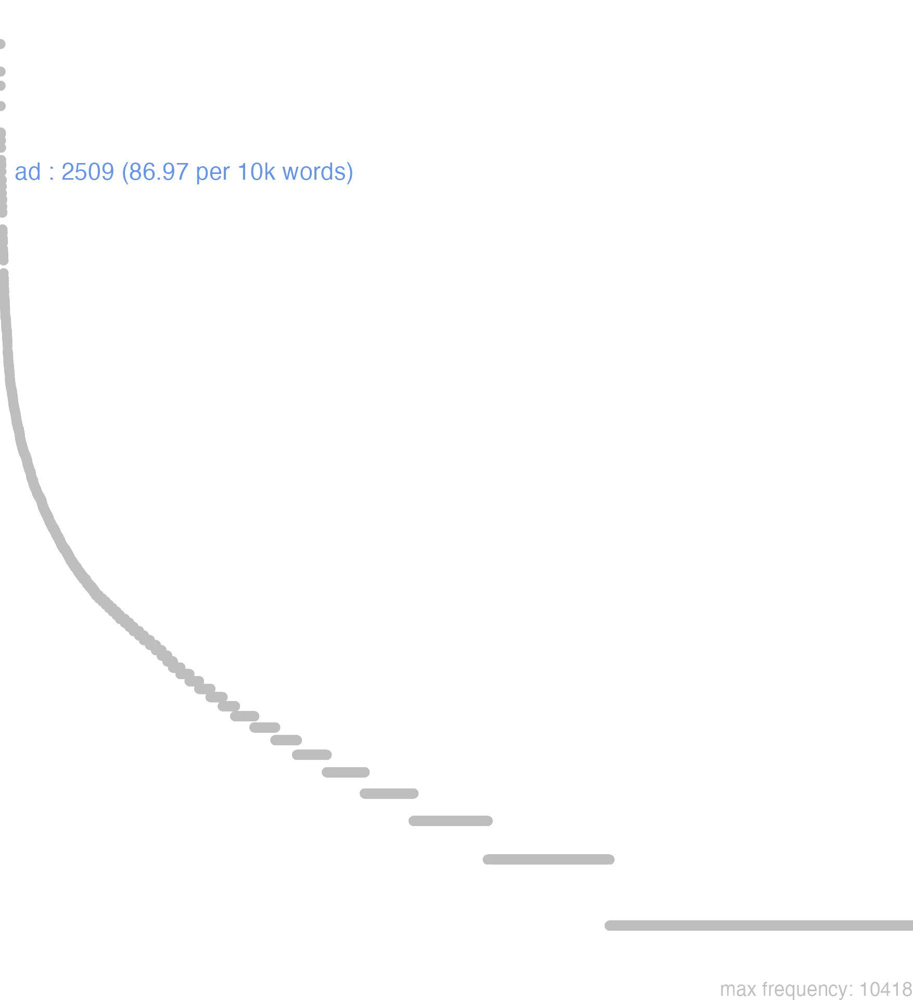

3 ad
3.0.0.1 bases lexicais
id: http://lila-erc.eu/data/id/lemma/87344
classe: preposição
paradigma: indeclinável
outras grafias: ar, at
variantes do lema:
no data
no data
no data
3.0.0.2 dicionários tradicionais
ad
prep. com acus. e prev.
prep. com acus. e prev.
1 I-indica: aproximação, direção para geralmente com idéia de movimento, aplicando-se ao espaço e ao tempo: A, para, até:
2 I-Com nomes de cidades e pequenas ilhas, indica a direção ou a chegada nas vizinhanças das mesmas:
3 I-Sent. Temporal: Até, em, durante, por, dentro de:
4 I-Indica a proximidade em seus vários aspectos: perto de, junto de, em casa de, diante de, na frente de, do lado de sem idéia de movimento:
5 Desses Sentidos gerais e básicos de “em direção a” ou “na vizinhança de” decorrem numerosas acepções derivadas: Em vista, para:
6 Desses Sentidos gerais e básicos de “em direção a” ou “na vizinhança de” decorrem numerosas acepções derivadas: Relativamente a, com relação a, quanto a Cíc. Verr. 5, 22.
7 Desses Sentidos gerais e básicos de “em direção a” ou “na vizinhança de” decorrem numerosas acepções derivadas: Segundo, conforme:
8 Desses Sentidos gerais e básicos de “em direção a” ou “na vizinhança de” decorrem numerosas acepções derivadas: Em comparação com Cíc. Tusc. 1, 40.
9 Desses Sentidos gerais e básicos de “em direção a” ou “na vizinhança de” decorrem numerosas acepções derivadas: Cerca de, pouco mais ou menos com numerais Cés. B. Gal. 1, 4, 2.
10 Desses Sentidos gerais e básicos de “em direção a” ou “na vizinhança de” decorrem numerosas acepções derivadas: Contra na língua militar Cés. B. Gal. 5, 9, 1.
[EXEMPLOS]
1
cum ego ad Heracleam accederem Cíc. Verr. 5, 129 “como eu me aproximasse de Heracléia”.
2
ad Genavam pervenit Cés. B. Gal. 1, 7, 1 “chegou às vizinhanças de Genebra.”
3
ad hanc diem Cíc. Cat. 3, 17 “até hoje”; ad vesperam Cíc. Cat 2, 6 “pela tarde”; ad annum Cíc. At. 5, 2, 1 “dentro de um ano”.
4
pons qui erat ad Genavam Cés. B. Gal. 1, 7, 2 “ponte que havia perto de Genebra” fuit ad me Cíc. At. 10, 4, 8 “esteve junto de mim ou em minha casa”; ad populum agere Cíc. Phil. 12, 17 “falar perante o povo”; ad laevam, ad dextram Cíc. Tim. 48 “ à esquerda, à direita”.
5
ad omnes casus Cés. B. Gal. 4, 31, 2 “em vista de todas as eventualidades”.
7
ad naturam Cíc. Fin. 1, 30 “segundo a natureza”.
no data
Ad
prepos. que rege accus.
prepos. que rege accus.
1 Cic. para, junto, ao pé, até.
Ad
praepos.
praepos.
1 para perto, ou junto
2 ponitur & pro Usque ad
3 aliquando significat officium
[EXEMPLOS]
1
ad dece annos i, post
ad haec mala hoc mihi accedit etiam i, praeter
ad me fuit bene mane esteve comigo, ou em minha casa muito cedo
ad Senatorem relicti i, domi Senatoris
crux, quae posita est ad portum i, prope portum
cum boues ad desiderium relictarum mugissent i, propter, vel prae desiderio
magnificus ad speciem ornatus i, quantùm ad speciem
taleta ad quindecim coegi i, circiter
2
ad eum nuncium commoti sunt omnes i, audito eo nuntio
ad extremum, ad postremum, ad ultimum i, denique, vel postremò
ad integrum i, integrè
ad liquidum ueritas explorata diliquidou-se a verdade
ad multam noctem, ad uesperum
ad unguem i, exquisitâ diligentiâ, & curâ exactissimâ
ad unum omnes i, nullo excepto
latebo ad tempus i, usque tempus quoddam
sententia ad uerbum translata i, de verbo ad verbum
3
ad cyathos stare dicuntur pincernae os copeiros
ad limina custos o porteiro
ad manus seruus qui & à manu
homines ad lecticam os leiteiros
Ad
praepositio.
praepositio.
1 acerca. ou para
3.0.0.3 dados de corpus
![This chart plots collocate by scoreSUBST, for the headword ad here are all the values plotted: collocate: ego; scoreSUBST: 0. collocate: is; scoreSUBST: 0. collocate: tu; scoreSUBST: 0. collocate: hic; scoreSUBST: 0. collocate: sui; scoreSUBST: 0. collocate: quemadmodum; scoreSUBST: 0. collocate: qui; scoreSUBST: 0. collocate: usque; scoreSUBST: 0. collocate: scribo; scoreSUBST: 0. collocate: modus; scoreSUBST: 3. collocate: res; scoreSUBST: 2. collocate: ille; scoreSUBST: 0. collocate: senatus; scoreSUBST: 3. collocate: Caesar; scoreSUBST: 0. collocate: uenio; scoreSUBST: 0. collocate: bellum; scoreSUBST: 2. collocate: iste; scoreSUBST: 0. collocate: nos; scoreSUBST: 0. collocate: legatus; scoreSUBST: 2. collocate: salus; scoreSUBST: 2. collocate: mors; scoreSUBST: 2. collocate: tempus; scoreSUBST: 2. collocate: mitto; scoreSUBST: 0. collocate: redeo; scoreSUBST: 0. collocate: urbs; scoreSUBST: 2. collocate: superus; scoreSUBST: 0. collocate: castra; scoreSUBST: 2. collocate: iudicium; scoreSUBST: 2. collocate: pertineo; scoreSUBST: 0. collocate: pes; scoreSUBST: 2. collocate: uesper; scoreSUBST: 2. collocate: extremum; scoreSUBST: 2. collocate: pugna; scoreSUBST: 2. collocate: colloquium; scoreSUBST: 2. collocate: ultimus; scoreSUBST: 0. collocate: sidus; scoreSUBST: 2. collocate: aditus; scoreSUBST: 2. collocate: caelum; scoreSUBST: 2. collocate: pernicies; scoreSUBST: 2. collocate: ianua; scoreSUBST: 2. collocate: sagum; scoreSUBST: 2. collocate: nutus; scoreSUBST: 2. collocate: securitas; scoreSUBST: 2. collocate: cornelius; scoreSUBST: 0. collocate: Manlius; scoreSUBST: 0. collocate: gnatus; scoreSUBST: 0. collocate: pridie; scoreSUBST: 0. collocate: ripa; scoreSUBST: 2. collocate: porta; scoreSUBST: 2. collocate: summa; scoreSUBST: 2. collocate: cena; scoreSUBST: 2. collocate: nauigo; scoreSUBST: 0. collocate: perscribo; scoreSUBST: 0. collocate: statua; scoreSUBST: 2. collocate: societas; scoreSUBST: 2. collocate: aedes; scoreSUBST: 2. collocate: uerum2; scoreSUBST: 2. collocate: fax; scoreSUBST: 2](./Media/wordcloud__xx97-100xx__BY_collocate_scoreSUBST.webp)
![This chart plots collocate by scoreADJ, for the headword ad here are all the values plotted: collocate: ego; scoreADJ: 0. collocate: is; scoreADJ: 0. collocate: tu; scoreADJ: 0. collocate: hic; scoreADJ: 0. collocate: sui; scoreADJ: 0. collocate: quemadmodum; scoreADJ: 0. collocate: qui; scoreADJ: 0. collocate: usque; scoreADJ: 0. collocate: scribo; scoreADJ: 0. collocate: modus; scoreADJ: 0. collocate: res; scoreADJ: 0. collocate: ille; scoreADJ: 0. collocate: senatus; scoreADJ: 0. collocate: Caesar; scoreADJ: 0. collocate: uenio; scoreADJ: 0. collocate: bellum; scoreADJ: 0. collocate: iste; scoreADJ: 0. collocate: nos; scoreADJ: 0. collocate: legatus; scoreADJ: 0. collocate: salus; scoreADJ: 0. collocate: mors; scoreADJ: 0. collocate: tempus; scoreADJ: 0. collocate: mitto; scoreADJ: 0. collocate: redeo; scoreADJ: 0. collocate: urbs; scoreADJ: 0. collocate: superus; scoreADJ: 0. collocate: castra; scoreADJ: 0. collocate: iudicium; scoreADJ: 0. collocate: pertineo; scoreADJ: 0. collocate: pes; scoreADJ: 0. collocate: uesper; scoreADJ: 0. collocate: extremum; scoreADJ: 0. collocate: pugna; scoreADJ: 0. collocate: colloquium; scoreADJ: 0. collocate: ultimus; scoreADJ: 2. collocate: sidus; scoreADJ: 0. collocate: aditus; scoreADJ: 0. collocate: caelum; scoreADJ: 0. collocate: pernicies; scoreADJ: 0. collocate: ianua; scoreADJ: 0. collocate: sagum; scoreADJ: 0. collocate: nutus; scoreADJ: 0. collocate: securitas; scoreADJ: 0. collocate: cornelius; scoreADJ: 2. collocate: Manlius; scoreADJ: 0. collocate: gnatus; scoreADJ: 2. collocate: pridie; scoreADJ: 0. collocate: ripa; scoreADJ: 0. collocate: porta; scoreADJ: 0. collocate: summa; scoreADJ: 0. collocate: cena; scoreADJ: 0. collocate: nauigo; scoreADJ: 0. collocate: perscribo; scoreADJ: 0. collocate: statua; scoreADJ: 0. collocate: societas; scoreADJ: 0. collocate: aedes; scoreADJ: 0. collocate: uerum2; scoreADJ: 0. collocate: fax; scoreADJ: 0](./Media/wordcloud__xx97-100xx__BY_collocate_scoreADJ.webp)
![This chart plots collocate by scoreVERBO, for the headword ad here are all the values plotted: collocate: ego; scoreVERBO: 0. collocate: is; scoreVERBO: 0. collocate: tu; scoreVERBO: 0. collocate: hic; scoreVERBO: 0. collocate: sui; scoreVERBO: 0. collocate: quemadmodum; scoreVERBO: 0. collocate: qui; scoreVERBO: 0. collocate: usque; scoreVERBO: 0. collocate: scribo; scoreVERBO: 3. collocate: modus; scoreVERBO: 0. collocate: res; scoreVERBO: 0. collocate: ille; scoreVERBO: 0. collocate: senatus; scoreVERBO: 0. collocate: Caesar; scoreVERBO: 0. collocate: uenio; scoreVERBO: 2. collocate: bellum; scoreVERBO: 0. collocate: iste; scoreVERBO: 0. collocate: nos; scoreVERBO: 0. collocate: legatus; scoreVERBO: 0. collocate: salus; scoreVERBO: 0. collocate: mors; scoreVERBO: 0. collocate: tempus; scoreVERBO: 0. collocate: mitto; scoreVERBO: 2. collocate: redeo; scoreVERBO: 2. collocate: urbs; scoreVERBO: 0. collocate: superus; scoreVERBO: 0. collocate: castra; scoreVERBO: 0. collocate: iudicium; scoreVERBO: 0. collocate: pertineo; scoreVERBO: 2. collocate: pes; scoreVERBO: 0. collocate: uesper; scoreVERBO: 0. collocate: extremum; scoreVERBO: 0. collocate: pugna; scoreVERBO: 0. collocate: colloquium; scoreVERBO: 0. collocate: ultimus; scoreVERBO: 0. collocate: sidus; scoreVERBO: 0. collocate: aditus; scoreVERBO: 0. collocate: caelum; scoreVERBO: 0. collocate: pernicies; scoreVERBO: 0. collocate: ianua; scoreVERBO: 0. collocate: sagum; scoreVERBO: 0. collocate: nutus; scoreVERBO: 0. collocate: securitas; scoreVERBO: 0. collocate: cornelius; scoreVERBO: 0. collocate: Manlius; scoreVERBO: 0. collocate: gnatus; scoreVERBO: 0. collocate: pridie; scoreVERBO: 0. collocate: ripa; scoreVERBO: 0. collocate: porta; scoreVERBO: 0. collocate: summa; scoreVERBO: 0. collocate: cena; scoreVERBO: 0. collocate: nauigo; scoreVERBO: 2. collocate: perscribo; scoreVERBO: 2. collocate: statua; scoreVERBO: 0. collocate: societas; scoreVERBO: 0. collocate: aedes; scoreVERBO: 0. collocate: uerum2; scoreVERBO: 0. collocate: fax; scoreVERBO: 0](./Media/wordcloud__xx97-100xx__BY_collocate_scoreVERBO.webp)
![This chart plots collocate by scoreADV, for the headword ad here are all the values plotted: collocate: ego; scoreADV: 0. collocate: is; scoreADV: 0. collocate: tu; scoreADV: 0. collocate: hic; scoreADV: 0. collocate: sui; scoreADV: 0. collocate: quemadmodum; scoreADV: 5. collocate: qui; scoreADV: 0. collocate: usque; scoreADV: 5. collocate: scribo; scoreADV: 0. collocate: modus; scoreADV: 0. collocate: res; scoreADV: 0. collocate: ille; scoreADV: 0. collocate: senatus; scoreADV: 0. collocate: Caesar; scoreADV: 0. collocate: uenio; scoreADV: 0. collocate: bellum; scoreADV: 0. collocate: iste; scoreADV: 0. collocate: nos; scoreADV: 0. collocate: legatus; scoreADV: 0. collocate: salus; scoreADV: 0. collocate: mors; scoreADV: 0. collocate: tempus; scoreADV: 0. collocate: mitto; scoreADV: 0. collocate: redeo; scoreADV: 0. collocate: urbs; scoreADV: 0. collocate: superus; scoreADV: 0. collocate: castra; scoreADV: 0. collocate: iudicium; scoreADV: 0. collocate: pertineo; scoreADV: 0. collocate: pes; scoreADV: 0. collocate: uesper; scoreADV: 0. collocate: extremum; scoreADV: 0. collocate: pugna; scoreADV: 0. collocate: colloquium; scoreADV: 0. collocate: ultimus; scoreADV: 0. collocate: sidus; scoreADV: 0. collocate: aditus; scoreADV: 0. collocate: caelum; scoreADV: 0. collocate: pernicies; scoreADV: 0. collocate: ianua; scoreADV: 0. collocate: sagum; scoreADV: 0. collocate: nutus; scoreADV: 0. collocate: securitas; scoreADV: 0. collocate: cornelius; scoreADV: 0. collocate: Manlius; scoreADV: 0. collocate: gnatus; scoreADV: 0. collocate: pridie; scoreADV: 2. collocate: ripa; scoreADV: 0. collocate: porta; scoreADV: 0. collocate: summa; scoreADV: 0. collocate: cena; scoreADV: 0. collocate: nauigo; scoreADV: 0. collocate: perscribo; scoreADV: 0. collocate: statua; scoreADV: 0. collocate: societas; scoreADV: 0. collocate: aedes; scoreADV: 0. collocate: uerum2; scoreADV: 0. collocate: fax; scoreADV: 0](./Media/wordcloud__xx97-100xx__BY_collocate_scoreADV.webp)
![This chart plots collocate by scoreFUNC, for the headword ad here are all the values plotted: collocate: ego; scoreFUNC: 0. collocate: is; scoreFUNC: 0. collocate: tu; scoreFUNC: 0. collocate: hic; scoreFUNC: 0. collocate: sui; scoreFUNC: 0. collocate: quemadmodum; scoreFUNC: 0. collocate: qui; scoreFUNC: 0. collocate: usque; scoreFUNC: 0. collocate: scribo; scoreFUNC: 0. collocate: modus; scoreFUNC: 0. collocate: res; scoreFUNC: 0. collocate: ille; scoreFUNC: 0. collocate: senatus; scoreFUNC: 0. collocate: Caesar; scoreFUNC: 0. collocate: uenio; scoreFUNC: 0. collocate: bellum; scoreFUNC: 0. collocate: iste; scoreFUNC: 0. collocate: nos; scoreFUNC: 0. collocate: legatus; scoreFUNC: 0. collocate: salus; scoreFUNC: 0. collocate: mors; scoreFUNC: 0. collocate: tempus; scoreFUNC: 0. collocate: mitto; scoreFUNC: 0. collocate: redeo; scoreFUNC: 0. collocate: urbs; scoreFUNC: 0. collocate: superus; scoreFUNC: 0. collocate: castra; scoreFUNC: 0. collocate: iudicium; scoreFUNC: 0. collocate: pertineo; scoreFUNC: 0. collocate: pes; scoreFUNC: 0. collocate: uesper; scoreFUNC: 0. collocate: extremum; scoreFUNC: 0. collocate: pugna; scoreFUNC: 0. collocate: colloquium; scoreFUNC: 0. collocate: ultimus; scoreFUNC: 0. collocate: sidus; scoreFUNC: 0. collocate: aditus; scoreFUNC: 0. collocate: caelum; scoreFUNC: 0. collocate: pernicies; scoreFUNC: 0. collocate: ianua; scoreFUNC: 0. collocate: sagum; scoreFUNC: 0. collocate: nutus; scoreFUNC: 0. collocate: securitas; scoreFUNC: 0. collocate: cornelius; scoreFUNC: 0. collocate: Manlius; scoreFUNC: 0. collocate: gnatus; scoreFUNC: 0. collocate: pridie; scoreFUNC: 0. collocate: ripa; scoreFUNC: 0. collocate: porta; scoreFUNC: 0. collocate: summa; scoreFUNC: 0. collocate: cena; scoreFUNC: 0. collocate: nauigo; scoreFUNC: 0. collocate: perscribo; scoreFUNC: 0. collocate: statua; scoreFUNC: 0. collocate: societas; scoreFUNC: 0. collocate: aedes; scoreFUNC: 0. collocate: uerum2; scoreFUNC: 0. collocate: fax; scoreFUNC: 0](./Media/wordcloud__xx97-100xx__BY_collocate_scoreFUNC.webp)
![This charts plots the frequency of lemma by author_Frequencies. The Caesar subcorpus registers the highest normalized frequency, with the value of 147.67 and an absolute frequency of 391. The Caesar subcorpus follows, with a normalized frequency of 147.67 and an absolute frequency of 391. the subcorpus with the least normalized frequency is Ovidius with the normalized value of 20.59 and an absolute freqeuncy of 12. here are all the values: subcorpus: Caesar ; normalized frequency: 391 ; absolute frequency: 147.669763577309. subcorpus: Cicero ; normalized frequency: 1474 ; absolute frequency: 91.8242754977449. subcorpus: Horatius ; normalized frequency: 28 ; absolute frequency: 24.8645768581831. subcorpus: Ovidius ; normalized frequency: 12 ; absolute frequency: 20.5902539464653. subcorpus: Phaedrus ; normalized frequency: 38 ; absolute frequency: 57.6893881888568. subcorpus: Sallustius ; normalized frequency: 64 ; absolute frequency: 59.363695390038. subcorpus: Seneca ; normalized frequency: 429 ; absolute frequency: 80.0656949291727. subcorpus: Suetonius ; normalized frequency: 4 ; absolute frequency: 44.1014332965821. subcorpus: Tacitus ; normalized frequency: 12 ; absolute frequency: 41.1946446961895. subcorpus: Vergilius ; normalized frequency: 21 ; absolute frequency: 40.5405405405405. subcorpus: Hieronymus ; normalized frequency: 36 ; absolute frequency: 80.880700966075](./Media/barchart__xx97-100xx__lemma_BY_author_Frequencies.webp)
![This charts plots the frequency of lemma by genre_Frequencies. The Prosa.epistolográfica subcorpus registers the highest normalized frequency, with the value of 122.15 and an absolute frequency of 461. The Prosa.histórica subcorpus follows, with a normalized frequency of 114.66 and an absolute frequency of 471. the subcorpus with the least normalized frequency is Poesia.lírica with the normalized value of 24.4 and an absolute freqeuncy of 29. here are all the values: subcorpus: Prosa.histórica ; normalized frequency: 471 ; absolute frequency: 114.657124077996. subcorpus: Prosa.filosófica ; normalized frequency: 548 ; absolute frequency: 90.2785786066127. subcorpus: Prosa.oratória ; normalized frequency: 864 ; absolute frequency: 82.9548836807389. subcorpus: Prosa.epistolográfica ; normalized frequency: 461 ; absolute frequency: 122.154800074194. subcorpus: Poesia.lírica ; normalized frequency: 29 ; absolute frequency: 24.3963994279465. subcorpus: Poesia.didática ; normalized frequency: 49 ; absolute frequency: 41.5641699889728. subcorpus: Poesia.trágica ; normalized frequency: 30 ; absolute frequency: 26.0597637248089. subcorpus: Poesia.épica ; normalized frequency: 21 ; absolute frequency: 40.5405405405405. subcorpus: Prosa.ficcional ; normalized frequency: 36 ; absolute frequency: 80.880700966075](./Media/barchart__xx97-100xx__lemma_BY_genre_Frequencies.webp)
![This charts plots the frequency of lemma by period_Frequencies. The I.a.C. subcorpus registers the highest normalized frequency, with the value of 92.11 and an absolute frequency of 1979. The II.d.C. subcorpus follows, with a normalized frequency of 41.88 and an absolute frequency of 16. the subcorpus with the least normalized frequency is II.d.C. with the normalized value of 41.88 and an absolute freqeuncy of 16. here are all the values: subcorpus: I.a.C. ; normalized frequency: 1979 ; absolute frequency: 92.1107749592739. subcorpus: I.d.C. ; normalized frequency: 478 ; absolute frequency: 73.1222273214013. subcorpus: II.d.C. ; normalized frequency: 16 ; absolute frequency: 41.8848167539267. subcorpus: IV.d.C. ; normalized frequency: 36 ; absolute frequency: 80.880700966075](./Media/barchart__xx97-100xx__lemma_BY_period_Frequencies.webp)
res ad senatum
Cic.Att.4.17.3
o assunto foi para o senado. [JDD]
redeo ad urbana
Cic.Att.5.13.3
Volto às coisas da cidade. [JDD]
sed redeo ad illud
Cic.Att.5.2.3
Mas volto àquilo. [JDD]
hoc quem ad modum obtinebis
Cic.Att.2.16.2
De que modo obterás isto? [JDD]
nunc ad ea quae scripsisti
Cic.Att.3.8.3
Agora, vamos ao que escreveste. [JDD]
deinde ipsum regem ad cenam uocauit
Cic.Ver.2.4.62.6
Em seguida convidou o próprio rei para jantar. [JDD]
is sibi legationem ad ciuitates suscepit
Caes.Gal.1.3.3
Ele toma a seu cargo a negociação com as cidades. [JDD]
Latinum si perfecero ad te mittam
Cic.Att.1.19.10
Se concluir a versão latina, te enviarei. [JDD]
hoc enim ad edendas operas tempus acceperat
Sen.Ep.29.6
pois tinha escolhido este momento para dar a conhecer suas obras.[*]
si erit pugnandum arcessam ad societatem laboris
Cic.Att.2.20.2
Se for preciso lutar, te chamarei para compartilhar o trabalho. [JDD]
ad mortem dies extremus peruenit accedit omnis
Sen.Ep.120.18
o último dia chega à porta da morte, todos se aproximam dela. [JDD]
sed eadem bonitas etiam ad multitudinem pertinet
Cic.Amici.50
Mas essa mesma ternura diz respeito também à multidão. [JDD]
eo ut erat dictum ad conloquium uenerunt
Caes.Gal.1.43.2
Lá, como havia sido combinado, chegaram para a conversação. [JDD]
acriter utrimque usque ad uesperum pugnatum est
Caes.Gal.1.50.3
E de ambos os lados lutou-se encarniçadamente até a tarde. [JDD]
sic illi tum inanes ad Antiochum reuertuntur
Cic.Ver.2.4.65.20
Assim eles então voltam de mãos vazias para junto de Antíoco [JDD]
et erat omnis civitas congregata ad ianuam
Vulg.Marc.1.33
e toda a cidade estava agrupada junto à porta. [JDD]
hoc unum ad pristinam fortunam Caesari defuit
Caes.Gal.4.26.5
Apenas isso faltou a César para a sua antiga fortuna. [JDD, de outra edição]
nobis eos quem ad modum scribis conserva
Cic.Att.1.11.3
reserva-os para mim, como escreves. [JDD]
abiecta toga se ad generi pedes abiecit
Cic.Att.4.2.4
lançando para longe de si a toga, lançou-se aos pés do genro. [JDD]
sed haec ad te scribam alias subtilius
Cic.Att.1.13.4
Mas em outra ocasião te escreverei com mais detalhes. [JDD]
acueram me ad exagitandam hanc eius legationem
Cic.Att.2.7.2
Eu tinha me aguçado para criticar essa legação dele. [JDD]
hoc Curio ad patrem detulit ille ad Pompeium
Cic.Att.2.24.2
Curião denunciou isto ao pai, este a Pompeu. [JDD]
quaesiui quem ad modum reuertissent negauit adhuc reuertisse
Cic.Ver.2.4.27.13
Perguntei como tinham voltado; disse que até agora não tinham voltado. [JDD]
summa omnium fuerunt ad milia trecenta sexaginta octo
Caes.Gal.1.29.3
A soma de todos dava em torno de 368 mil. [JDD, de outra edição]
nullum animal ad uitam prodit sine metu mortis
Sen.Ep.121.18
Nenhum animal vem para a vida sem medo da morte. [JDD]
quem ad modum igitur eum dies non fefellit
Cic.Mil.45
Como, portanto, o dia não o enganou? [JDD]
Ita caput ad nostrum furor illorum pertinet .
Phaed.1.30
Assim o furor deles tem a ver com a nossa cabeça.” [JDD]
uerum ad istam omnem orationem breuis est defensio
Cic.Cael.9
Mas para todo esse teu discurso minha defesa é breve. [JDD]
sed de hoc alias nunc redeo ad augurem
Cic.Amici.1
Mas sobre ele, em outra ocasião; agora volto ao áugure. [JDD]
tum frequens senatus ad istum uenit pollicetur signum
Cic.Ver.2.4.87.8
Então o senado em grande número veio até esse sujeito, promete-lhe a estátua. [JDD]
ad hunc utrum legatos an legiones ire oportebat
Cic.Phil.6.9.4
O que convinha irem até ele legados ou legiões? [JDD]
interim a compluribus ciuitatibus ad eum legati ueniunt
Caes.Gal.4.18.3
Entrementes, chegam até ele legados de muitas cidades. [JDD]
ea plaga nonne ad multos bonos viros pertinet
Cic.Att.2.1.10
Por acaso essa chaga não atinge a muitos homens bons? [JDD]
de tuo autem negotio saepe ad me scribis
Cic.Att.1.19.9
Me escreves com frequência sobre o teu assunto. [JDD]
et scito Curionem adulescentem venisse ad me salutatum
Cic.Att.2.8.1
E fica sabendo que o jovem Curião veio até mim para me saudar. [JDD]
tum uero dubitandum non existimauit quin ad eos proficisceretur
Caes.Gal.2.2.5
Achou, então, que não devia hesitar em partir na direção deles. [JDD]
magnum uideor dicere attendite etiam quem ad modum dicam
Cic.Ver.2.4.2.1
2 Pareço estar dizendo algo grave: notai também de que modo eu digo. [JDD]
senatum ad pristinam suam severitatem revocavi atque abiectum excitavi
Cic.Att.1.16.8
fiz o senado voltar à sua antiga severidade e, estando ele humilhado, levantei-o. [JDD]
itaque breui tempore ad fanum ex urbe tota concurritur
Cic.Ver.2.4.95.4
E assim, em pouco tempo, corre-se da cidade inteira em direção ao templo. [JDD]
hi ad utramque ripam fluminis agros aedificia uicosque habebant
Caes.Gal.4.4.2
estes tinham, em uma e outra margem do rio, campos, edifícios e aldeias. [JDD, de outra edição]
prima contio Pompei qualis fuisset scripsi ad te antea
Cic.Att.1.14.1
Já te escrevi como tinha sido o primeiro discurso de Pompeu diante do povo. [JDD]
quae omnia ab his diligenter ad diem facta sunt
Caes.Gal.2.5.1
E todas essas coisas foram diligentemente feitas por estes no dia marcado. [JDD]
quae quidem res ad negotium conficiendum maximae fuit opportunitati
Caes.Gal.3.15.4
Esse fato, na verdade, foi especialmente oportuno para concluir o negócio. [JDD, de outra edição]
uita enim cum exceptione mortis data est ad hanc itur
Sen.Ep.30.10
Pois a vida nos foi dada com a condição da morte e a ela se encaminha. [JDD]
tertium uero tempus id est futurum ad muta non pertinet
Sen.Ep.124.16
Já o terceiro tempo, isto é, o futuro, não conta para os animais mudos. [JDD]
cum haec scribebam in tribunali res erat ad HS C̅X̅X̅
Cic.Att.5.20.5
quando eu te escrevo isto, a soma na tribuna é de uns cento e vinte mil sestércios. [JDD, de outra edição]
ipse cum primum pabuli copia esse inciperet ad exercitum uenit
Caes.Gal.2.2.2
Ele próprio, assim que começava a haver abundância de pastagem, vem até o exército. [JDD]
iste homo non est unus e populo ad salutem spectat
Sen.Ep.10.3
esse homem não é mais um do povo, olha para a sua salvação.” [JDD]
de meis scriptis misi ad te Graece perfectum consulatum meum
Cic.Att.1.20.6
Dos meus escritos, te mandei já terminado o meu consulado em grego. [JDD]
eodem die legati ab hostibus missi ad Caesarem de pace uenerunt
Caes.Gal.4.36.1
No mesmo dia legados enviados pelos inimigos vieram a César acerca da paz. [JDD]
3.0.0.4 Diagrama de Zipf
